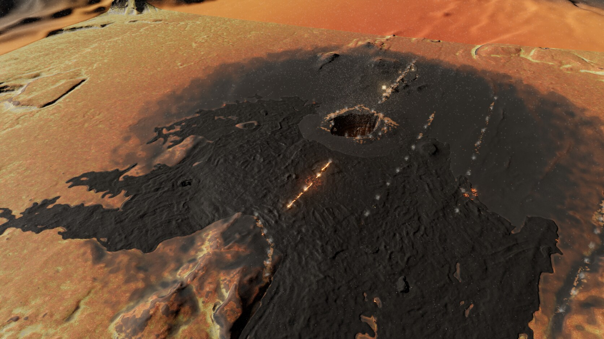
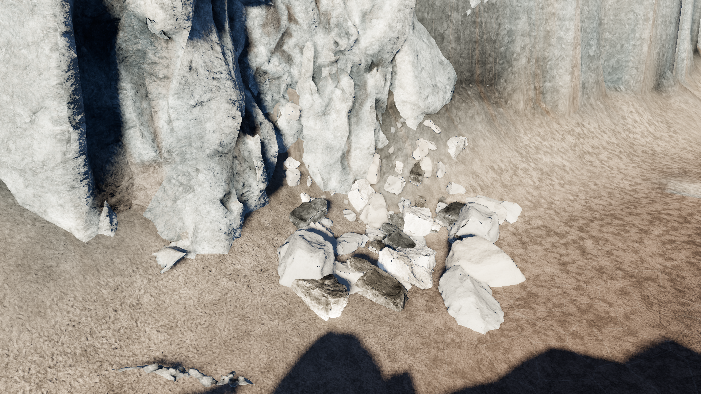
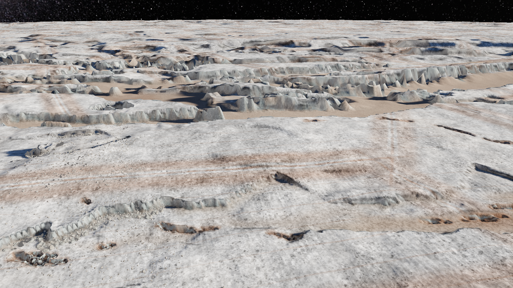
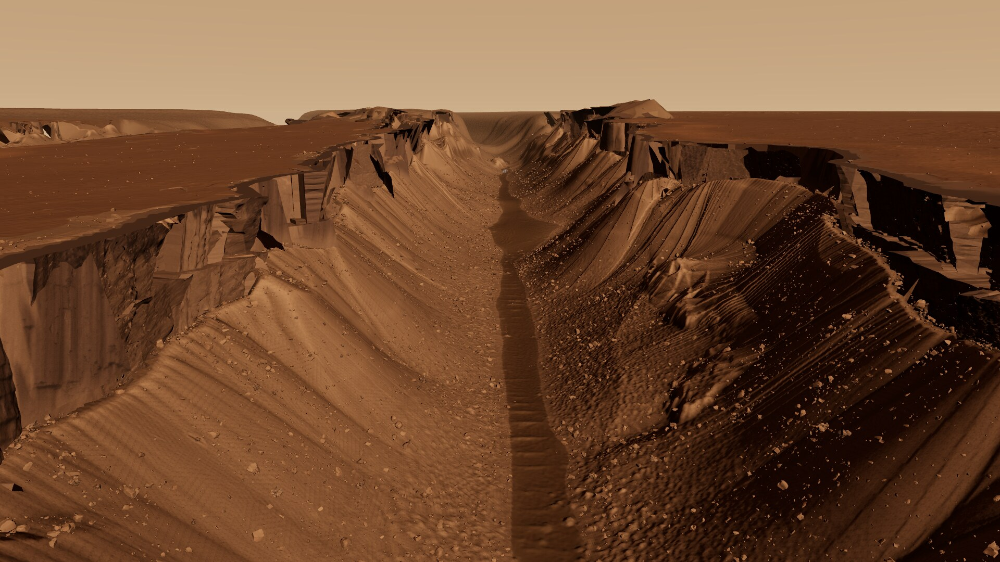

Six Reddit attachments / actual render evidence
The image set.
Original, unchanged captures from the scan-built sessions. Europa shows the later textured game port; Io, Moon and Mars show the Three.js scan prototypes.

USGS Kīlauea lidar provides the collapsed summit. Authored lava activity and simulated sulfur deposits change its identity.
Download attachment


Iceland ArcticDEM terrain, transplanted volcanic features, dark lava surfaces and procedural plume fallout.
Download attachment


Galileo stereo layout with terrestrial cliff modules re-materialled as ice. Baked relief and surface detail in the later game port.
Download attachment


Terrestrial lidar graben layout and scanned cliff faces become bright ice plains, troughs and fissures.
Download attachment

Kaguya and LROC NAC measured relief surround an authored shaft and overhang based on pit measurements.
Download attachment


HiRISE/CTX relief provides the fissures; transplanted scan modules supply the steep wall faces.
Download attachment